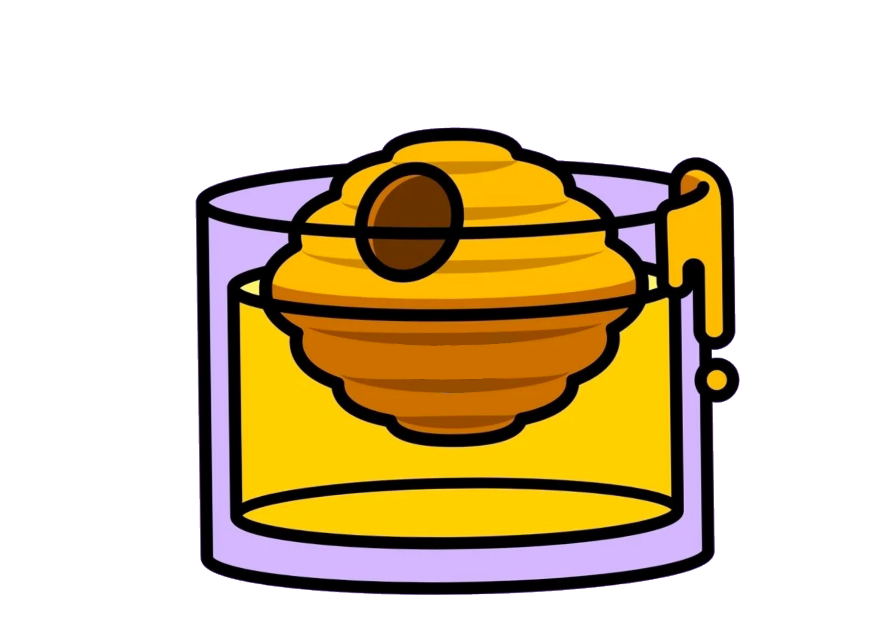
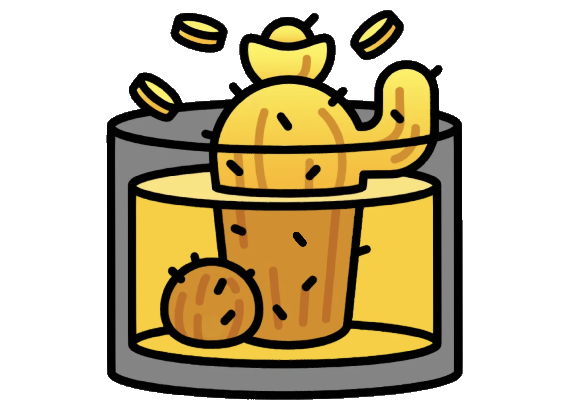

-

Bee's Knees
Ingradients
45ml Gin
15ml Lemon juice
10-15ml HoneySteps
1. Shake all ingredients with ice in a Boston
Shaker for 30 seconds.
2. Strain it into a chilled coupe glass.
3. Garnish with a citrus twist. -

French Cactus
Ingradients
45ml Tequila
20ml Cointreau
2 dashes of Aromatic bitterSteps
1. Add all ingredients to a mixing glass filled
with ice.
2. Stir for 15 seconds.
3. Strain into an old fashion glass filled with ice.
4. Garnish with a lime wedge. -

Eggnog
Ingradients
45ml Brandy
45ml Fresh milk
15ml Espresso, freshly brewed
10ml Simple syrup
1 Egg yolkSteps
1. Dry shake all ingredients (without ice) in a Boston Shaker to emulsify egg yolk.
2. Add ice and shake again until well-chilled.
3. Strain into a chilled old fashion glass.
4. Sprinkle coco powder on the surface.
5. Garnish with a cinnamon roll.